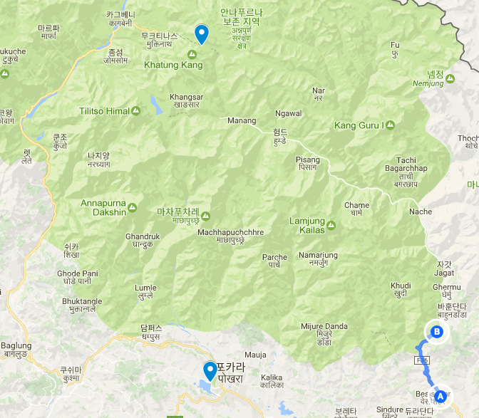
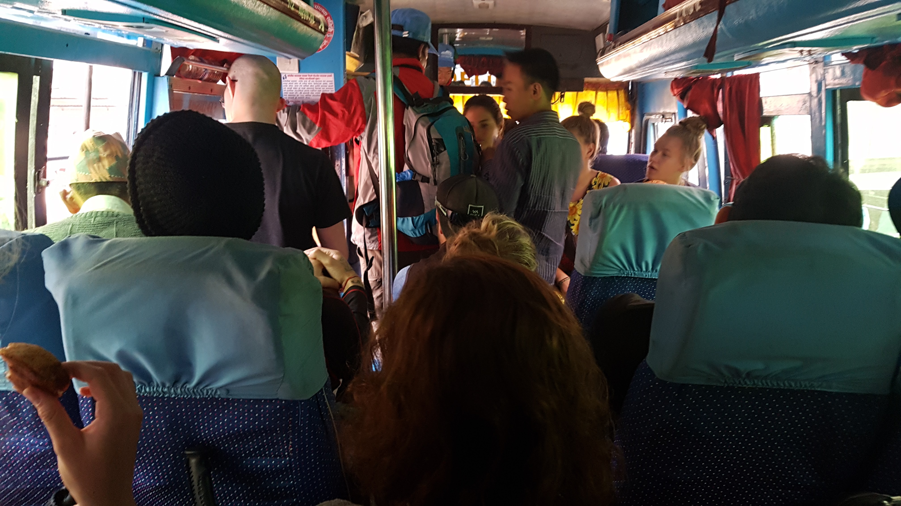
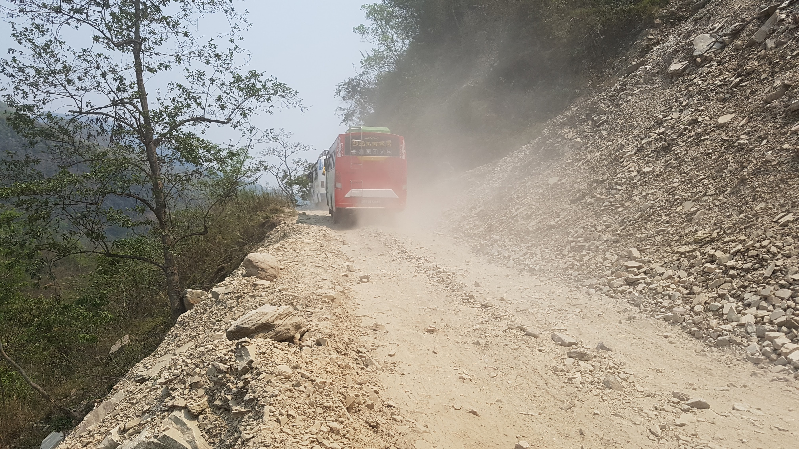
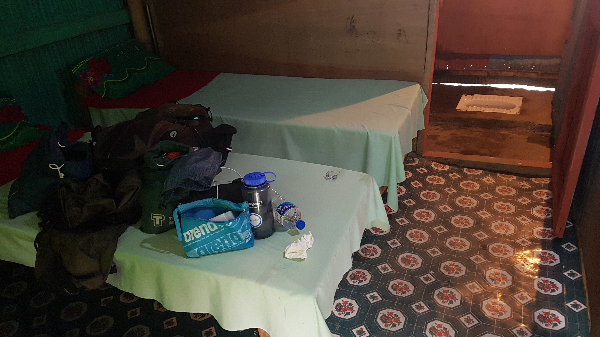

안나푸르나 트레킹 첫째날
2017년 04월 12일
여행 D+9, 안나푸르나 D+1

첫째날 도보 이동 경로 (A) -> (B)
Basisahar (820m) -> Khudi (790m) -> Bhulbhule (840m) -> Ngadi (890m) 약 13km
괴로웠던 베시사하르(Basisahar) 까지 버스이동
아침 5시에 일어나 마지막 짐 정리를 했다. 6시에 윈드폴 게스트하우스를 뒤로하고 택시를타고 출발했다. 버스 정류장에 도착했다. 이미 도착해있는 백인들이 많았다. 베시사하르행 버스티켓을 구매 해야한다. 생각보다 쉽게 버스를 탈 수 있을줄 알았는데 어디서 버스티켓을 끊어야 할지 어떤버스를 타야할지 감이 오지 않았다. 가게에서 티켓과 빵하나를 주문하고 먹으면서 긴장한채 두리번 거리며 앉아 있었더니 티켓을 판매한 아저씨가 왜 안타고 뭐하냐 저 버스 어서 타라고한다. 출발 10분전 이미 버스 꽉 찼다. 자리가 없었다. 시작부터 난항이다. 서서가는건가? 두시간 반에서 세시간 걸리는 거리라고 한다. 다행이 간의 의자들을 나눠줘서 통로에 앉긴할 수 있었다. 여행중이니까 이 모든것들이 자연스럽게 받아들여진다.
새로운 환경에 놓이면 나는 늘 긴장한다. 그러나 잔뜩 움츠려있는 나와 달리 내 주변의 동행이있는 자들은 긴장하지 않는다 즐거워 보인다. 마치 이미 익숙한 여행인것처럼 말이다. 어딜가나 끼리끼리 즐겁게 떠들고 있는 백인들을 보면 난 외톨이 같이 느껴진다. 그들은 항상 동행들과 즐겁게 이야기 하고 있다. 언어도 서로 잘 통하고 외모도 비슷하니 처음보는 사람끼리도 쉽게 대화가 이루어지는것 같다. 그들은 항상 긴장하지 않는것처럼 보인다.
내가 우려했던일이 생각보다 일찍 일어났다. 여행 중 장기간 불편한 의자에 앉아 있게되는 일이다. 여행중엔 장기간 버스이동이 많이 있을텐데 완전 딱딱한 의자에 오랫동안 않아있게 될까봐 걱정했다. 내 이상근증후군 때문이다. 하지만 난 한국에서 최선을 다해 치료받으려 노력했고 출국날짜가 다가와서 더이상 치료 받을 수 없었다. 나는 최선을 다 해본거니 이제 받아들이고 이렇게 살아야한다.
엄청나게 덜컹거리는 버스 통로에 딱딱한 간의 의자에 앉아있으니 헛웃음이 나온다. 걱정했던 일이 일어났지만 그냥 그려러니 하고 넘겼다. 하지만 곧 이버스가 5시간짜리 버스라는것을 알고 눈앞이 깜깜해졌다. 정말 지옥의 버스였다. 엉덩이가 너무 아파서 죽을뻔했다. 5시간이 어떻게 지나갔는지 모르겠다. 돌아버릴뻔.
 지옥 같았던 5시간 버스와 통로 간이의자
Ngadi 로 걷기 시작
버스에 한국인 2명이 있었다. 버스에서 내리고 두분이 같이 지프를 타고 다라파니?까지 가지않겠냐고 했다. 왜냐하면 거기까지 가는길이 한 2일걸리는데 차길이라 먼지만 많고 별로 볼것도 없다고 하기 때문이다. 먼지가 많다는말에 갑자기 혹했다. 미세먼지 정말 지긋지긋하다. 카트만두에서도 먼지를 너무 먹어서 먼지라면 질색이다.
꽤 고민 했다. 선택의 순간에는 더 어려운길을 선택하라고 했다. 나는 마음의 소리에 귀 기울이기로 했다. 편하게 지프차나 타고 관광하려고 안나푸르나에 왔나? 아니다. 나는 직접 걸어가기로 했다. 먼지가 많은 길이지만 그냥 2일정도만 버티기로 했다. 그들은 인사도 안하고 갔다. 별로다. 그들이랑 동행 안하길 잘했다.
점심을 먹고 식당에서 거스와 이리쉬라는 홀란드인을 만났다. 트레킹을 하게되면 아마 코스가 같으니 또 만날 가능성이 크다. 롯지에서 아니면 길에서말이다. 시작할때 미리미리 인사를 많이 해놓으면 트레킹 길이 더 즐거울 것이다.
간단하게 스트레칭을 하고 출발했다. 조금 더 할걸 그랬다. 총 210km 의 거리. 잘해보자며 마음을 다잡고 시작했다. 확실히 정말 별로 볼것없는 길이다. 비포장 도로라 차가 지나다닐때 마다 먼지가 너무 많이 날린다. 그리고 트레킹하는 사람도 아무도 없다. 그래도 벌써부터 걷는 이유는 고산병을 미리 대비하기 위함이다. 지프차를 타고 급격하게 올라가면 아무래도 고산병에 걸리기 쉽기 때문이다. 그래도 걷길 잘했다는 생각이 든다. 진짜 여행하는 느낌이다. 가이드 없이 누구의 간섭없이 정해진 일정도 없이 내가 직접 이동하는 여행말이다.
짐이 겁나 무겁다. 13Kg 뭘쌋길래 이렇게 무겁나.. 무릎이 벌써부터 살짝살짝 아프기 시작했다? 출발하기 전에 무릎보호대를 쌌는데 천만다행이다. 한번 무릎보호대를 착용해봤는데 꽤 괜찮은것 같았다. 그래도 상당히 불편했다. 어떤 블로그에서는 하루에 2~3시간만 착용하라고 하던데 어떻게 해야할지 모르겠다. 오르막길 보다 하산길에 더 많이 필요하다.
걷는것에 집중하자. 생각해보니 싼티아고도 무거운 베낭을 메고 계속 걷지않나? 나도 똑같은거다. 나는 지금 수행중이다. 나는 그냥 멋진 산을 구경하고 관광하러 온것은 아니다.
우여곡절 끝에 Ngadi까지 도착했다. 약 13Km를 걸었다. 처음에 힘들어서 Bhulbhule까지만 가서 롯지에서 잘까 했지만 선 경험이있는 Y친구가 보내준 일정과 처음에는 한번 맞춰서 가보는게 좋을것 같았다.  차가 지나갈 때마나 흙먼지가 날리는 이런 도로를 트래킹 내내 걸었다
포터나 가이드의 도움을 받는것에 대해서 ..
걷는 중에 몇몇 트레커들이 있었다. 두팀을 발견했는데 모두 남녀 한쌍이었다. 저렇게 다들 직접 가방을 메고 걸을 수 있는거구나 하는 안도감이 생겼다. 진짜 생각보다 몸이 무겁고 무릎도 조금 아프고 걱정이 되지만 건강 유의 해서 나도 꼭 완주 하고 싶다.
영화 와일드를 본적이 있다 거기 PCT라는 트레킹코스가 있다 북미 대륙을 4800km를 종단하는 트레킹 코스다. 그런 코스에서 포터가 짐을 들어주는 사람이 있을까? 한명도 없을것이다. 이곳 안나푸르나에 관광하러 온것이 아닌이상 내짐은 내가 짊어지고 가는거다.(적어도 나는 그렇다) 나는 여행을 시작하는 시점에 몇년전부터 오랫동안 가고 싶었던 안나푸르나에 왔다. 처음에는 인터넷에 있는 사람들의 글을 보고 포터를 고용해서 짐을 들게할 생각이었지만 막상와서 많은 생각이 바뀌었다. 포터가 없어도 할 수 있다. 실제로 윈드폴 게스트하우스에서 본 많은 여행자들이 직접 다녀옸다. 특히 여성 여행자들이 많이 그렇게 한다는 사실이 더 놀라웠다. 나도 군대에서도 행군 많이 해보지 않았나. 그때보다 지금 내가 가진 장비가 훨씬 좋다. 두려워하지말고 내 페이스를 잘 유지하며 걷는다면 분명 중간에 포기하지 않고 돌아올 수 있을 것이다.
Ngadi 마을 도착
Ngadi에 도착 하자마자 호객행위를 당했다. 너무 힘들어서 그냥 그 롯지에서 묶기로 했다. 내가 만난 최악의 시설을 가진 숙소였다. 방안에 딱 침대만 있다. 충전은 밖에서 해야한다. 세면대 같은것은 없고 시멘트 화장실에 샤워꼭지만 있다. 찬물로 샤워를 하는데 나 왜 이렇게 굳이 사서 쌩고생을 하고 있냐하면서 헛 웃음이 나왔다. 그래도 뭔가 기분 좋았다. 쌩고생을 하고 있지만 왜인지 모르게 통쾌했다.
샤워하기 전에 짐을 확인하는데 멘붕이 왔다. 수건을 안가져 온 것이다! 그렇게 열심히 짐을 쌌는데 결국 수건한장을 안챙겨왔다. 앞으로 2주동안 몸을 어떻게 닦나? 망했다 진짜. 이런 작은 롯지에 스포츠타월을 팔리가 없다. 앞으로도 ..ㅜ 일단 숙소 주인에게 한장 빌려서 오늘은 몸을 닦긴했다. 숙소 주인이 더 가면 수건을 파는곳이 있다고 하는데 내가 과연 그 가게를 찾을 수 있을까.. 걱정이 된다.
어제도 4시간 밖에 못자고 오늘 무척 피곤하기 때문에 저녁만 먹고 바로 잤다.
 첫째날 묶은 롯지 모양새